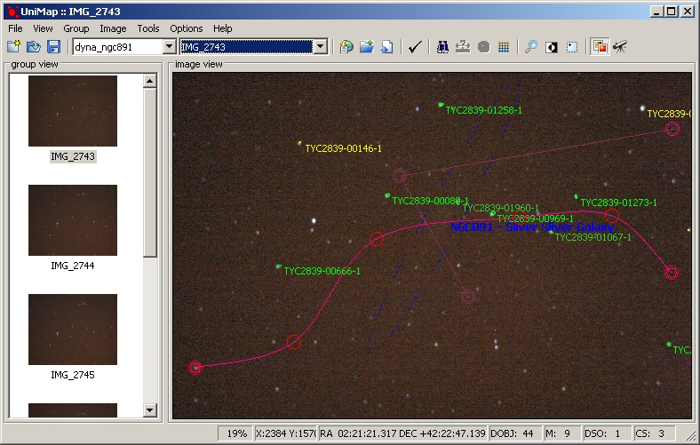
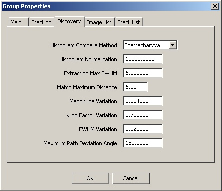

|
uniMap → Automatic Object Discovery And Trajectory Reconstruction (version 0.002 pre-alpha) | |||||||||||||||||||||||
| |||||||||||||||||||||||
|
First be aware that this module is highly experimental as more testing,
debugging and improvements needs to be done. The object discovery and trajectory reconstruction module
will first register and align all image in the sequence (stack list) , then compare the frame by frame and
extract objects which don’t match. At this point we will have a list of possible unknown object for every frame.
Now we compare each unknown object profile (by various criteria) for each frame with the previous and next
frame (time recording wise) and recursively we try to reconstruct trajectories. Then we will sort all trajectories
by highest score and add them the group profile. Unfortunately I didn’t have real cases at hand so most testing
was done with artificially created objects.
|
|
Trajectory discovered for an artificially created object passing over ngc891  |
|
Object discovery setup tab  |